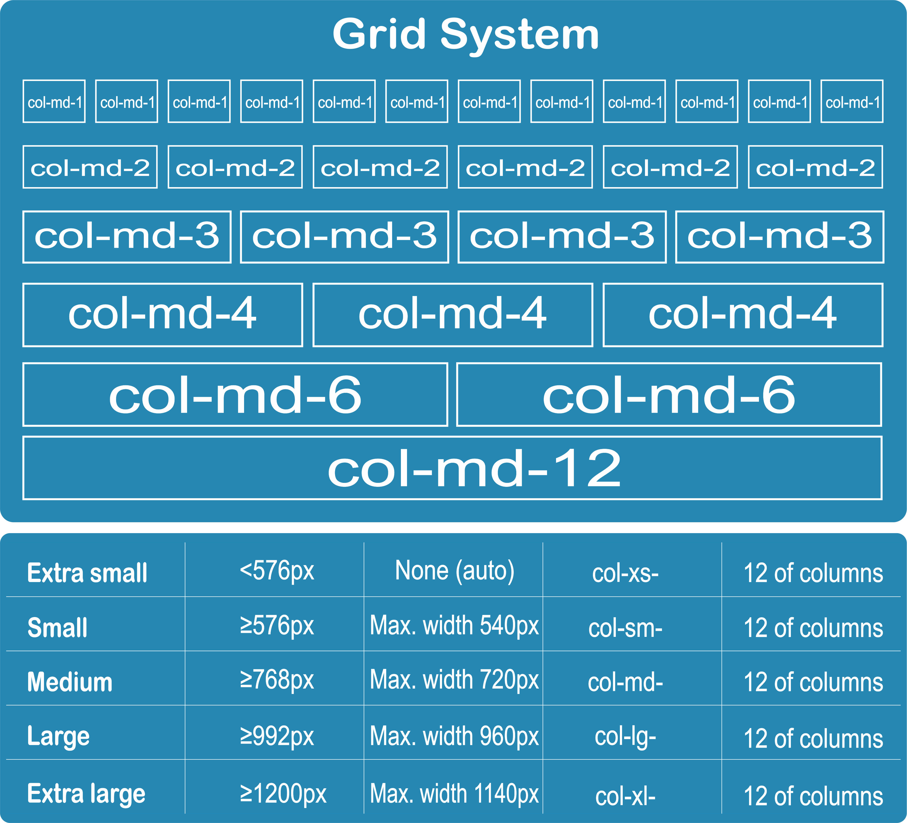

Bootstrap
4.1 v
Build responsive, mobile-first projects on the web with the world's most popular front-end component library.
Bootstrap is an open source toolkit for developing with HTML, CSS, and JS. Quickly prototype your ideas or build your entire app with our Sass variables and mixins, responsive grid system, extensive prebuilt components, and powerful plugins built on jQuery.
Introduction
Originally created by a designer and a developer at Twitter, Bootstrap has become one of the most popular front-end frameworks and open source projects in the world.
Bootstrap was created at Twitter in mid-2010 by @mdo and @fat. Bootstrap was known as Twitter Blueprint.
Originally released on , we’ve since had over twenty releases, including two major rewrites with v2 and v3. With Bootstrap 2, we added responsive functionality to the entire framework as an optional stylesheet. Building on that with Bootstrap 3, we rewrote the library once more to make it responsive by default with a mobile first approach.
With Bootstrap 4, we once again rewrote the project to account for two key architectural changes: a migration to Sass and the move to CSS’s flexbox. Our intention is to help in a small way to move the web development community forward by pushing for newer CSS properties, fewer dependencies, and new technologies across more modern browsers.
Why Bootstrap
Comparison

Bootstrap Advantages
- Easy to Use.
- Best styes, and ultimate in rapid prototyping.
- The grid system comprises of fluid, as well as fixed patterns.
- Mobile support is superior in comparison with foundation.
- It has highest number of templates.
- Its developer communities is too large.
Bootstrap Grids
Let's Started
with
Bootstrap Coding
Bootstrap Class
Customization
Conclusions
You might be happy with your current custom CSS library, but try using Bootstrap for one project and am sure you would ask yourself how you managed all these years without it.